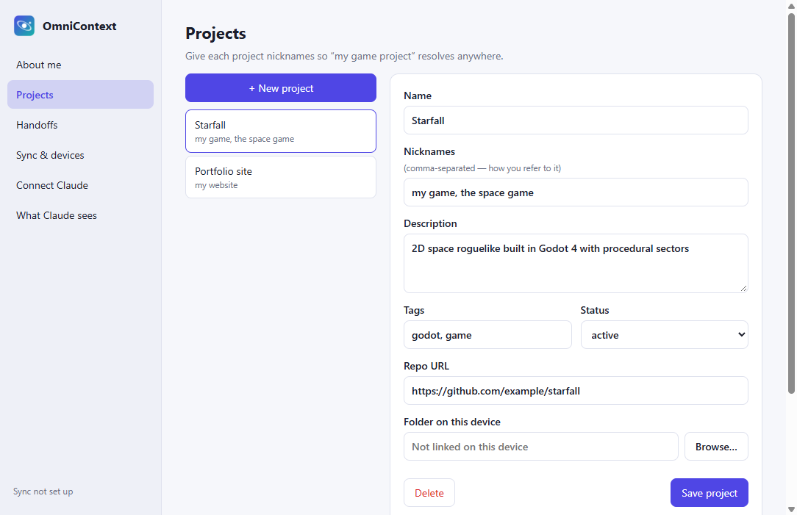
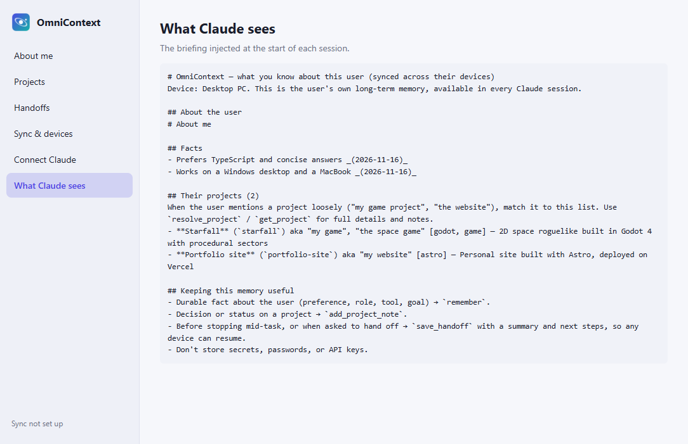

OmniContext gives Claude long-term, cross-device memory. It knows who you are, which project “my game project” means, and lets you resume work on your laptop that you started on your desktop. It works in Claude Code, Claude Desktop, and any MCP client.
you (laptop) › continue my game project
claude › Resuming Starfall, your Godot space roguelike. Yesterday on your desktop you finished the enemy state machine. Next is tuning the boss fight. The project is at ~/code/starfall on this machine…
Your role, preferences, tools and facts. Tell Claude something lasting once, and every session knows it after that.
Names, nicknames, repos, folders on each device, and notes. Loose references like “the website” or “that bot” just work.
Handoffs hold a summary and next steps. Save on one device and resume on another with /omnicontext:resume.
Plain Markdown and JSON files synced through a private git repo you own. There's no server, no account and no telemetry.


Injects context at session start, syncs at the end, and adds slash commands.
/plugin marketplace add aaryanbindage/omnicontext
/plugin install omnicontext@omnicontextAny MCP client:
{"mcpServers":{"omnicontext":
{"command":"npx","args":["-y","@aaryanbindage/omnicontext","mcp"]}}}Do this once per device:
omnicontext sync --github # first device
omnicontext sync --remote <url> # othersIt's one memory shared by Claude Code, Claude Desktop and other MCP tools on all your machines. It stores structured projects and handoffs, and the plain files are yours.
In ~/.omnicontext on each device and in the git remote you choose. Nothing else.
Yes. It's MIT-licensed open source.